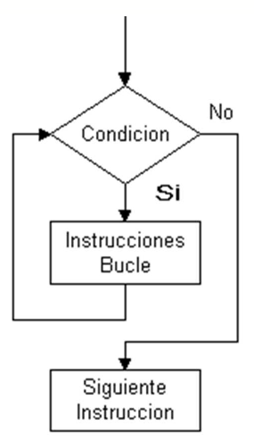

Estructura de Control Repetitiva o Iterativa
Conceptos básicos
Created by edme88
Estructuras Repetitivas o Iterativas
Este tipo de estructura de algoritmos que permite repetir una o varias acciones un número determinado de veces.
Se denominan BUCLES, LAZO o LOOP, y cada repetición del bucle se llama iteración o ciclo.
Todo bucle tiene que llevar asociada una condición, que es la que va a determinar cuándo se repite el bucle y cuando deja de repetirse.

Bajo ninguna circunstancia hagas un loop infinito! LA COMPU VA A AUTODESTRUIRSE!!!
Bah, no es para tanto, pero nunca va a terminar el programa xD
Tipo de Bucles
- While (mientras)
- Do While (hacer mientras)
- For (para)
While

While
Esta estructura repetitiva “mientras”, es en la que el cuerpo del bucle se repite siempre que se cumpla una determinada condición.
Mientras <cond> hacer
<acciones>
fin mientras
En las acciones suele haber alguna operación que afecte la condición (para llegar a una condición de corte).
While: Ejemplo
INICIO
BOOLEANO tanqueLleno = falso
MIENTRAS (tanqueLleno == falso) HACER:
llenar tanque
FIN_MIENTRAS // el tanque ya está lleno :)
FIN
While: C
while(condición){
acciones;
}
Trap While

Do While

Do While
Esta estructura es muy similar a la anterior, sólo que a diferencia del while el contenido del bucle se ejecuta siempre al menos una vez, ya que la evaluación de la condición se encuentra al final.
De esta forma garantizamos que las acciones dentro de este bucle sean llevadas a cabo, aunque sea una vez independientemente del valor de la condición.
Do While
Hacer
<acciones>
Mientras <cond>
fin mientras
Do While: Ejemplo
INICIO
BOOLEANO llegadaColectivo=false;
HACER: esperar en la parada
MIENTRAS (llegadaColectivo == false)
FIN_MIENTRAS FIN
Do While: C
do{
acciones;
}
while(condicion)
For

For
Permite ejecutar un conjunto de acciones para cada elemento de una lista, o para cada paso de un conjunto de elementos.
Suele emplearse cuando se conoce a priori la cantidad de ciclos.
For
Podemos identificar tres componentes:
- inicialización
- condición de corte
- incremento
For
Para (inicialización; condición de corte; incremento)
<acciones>
Fin para
For: Ejemplo
INICIO
PARA (ENTERO RUEDA = 1; RUEDA <= 4; RUEDA++)
inflar_rueda (RUEDA)
FIN_PARA FIN
Cuantas veces se llama a la función inflar_rueda?

¿Dudas, Preguntas, Comentarios?